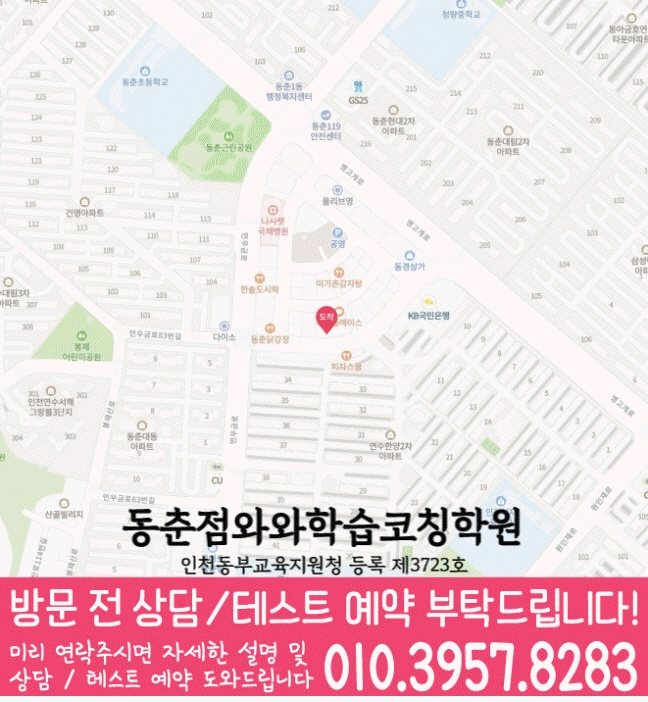

30초 핵심 안내
동춘동 고등 영수학원 선택 전 확인할 기준
동춘동 고등 영수학원은 동춘동에서 고등 영어와 수학 학원을 찾는 가정을 위한 지역 정보 콘텐츠입니다. 제공 주소는 인천 연수구 앵고개로264번길 40 남지빌딩 4층 와와학습코칭센터이고, 집중학습관리, 학생 유형별 우선순위, 시험 대비와 오답 피드백을 정리합니다. 수업 가능 여부와 비용·시간표 등 운영 정보는 동춘동 상담 시 확인해야 합니다.
High School English & Math
동춘동 고등 영수학원 선택 전 무엇을 물어봐야 할까요? 인천 연수구 동춘동 고등학생의 과목별 진단, 주간 복습, 내신·오답 관리와 집중학습관리 확인법을 주소 인천 연수구 앵고개로264번길 40 남지빌딩 4층 와와학습코칭센터 정보와 함께 구체적으로 설명합니다.
30초 핵심 안내
동춘동 고등 영수학원은 동춘동에서 고등 영어와 수학 학원을 찾는 가정을 위한 지역 정보 콘텐츠입니다. 제공 주소는 인천 연수구 앵고개로264번길 40 남지빌딩 4층 와와학습코칭센터이고, 집중학습관리, 학생 유형별 우선순위, 시험 대비와 오답 피드백을 정리합니다. 수업 가능 여부와 비용·시간표 등 운영 정보는 동춘동 상담 시 확인해야 합니다.
수업 안내 이미지

센터 위치 안내

인천 연수구 동춘동에서 동춘동 고등 영수학원을 찾는 학부모에게 먼저 드릴 답은, 영어와 수학을 한 묶음으로만 관리하기보다 과목별 약점을 따로 진단한 뒤 한 주 계획에서 다시 연결해야 한다는 점입니다. 이번 페이지의 기준 학생은 고3이며, 영어 문제 풀이 후 정답만 확인하고 오답 선택지를 분석하지 않는 학생이고 수학 시험 초반에 시간을 많이 써 후반 문항을 놓치는 학생이며 평소에는 목표 점수만 정하고 필요한 행동 지표는 정하지 않는 편입니다. 집중학습관리도 광고 문구만 보지 말고 실제 수업·관리 절차를 질문해야 하며, 아래에서는 중간고사 준비를 시작해야 하는 시점에 무엇부터 확인할지 구체적으로 설명합니다.
동춘동 고등 영수학원 선택에서 먼저 확인할 것은 학생이 실제로 다닐 수 있는 위치와 수업 대상입니다. 제공된 정보는 인천 연수구 앵고개로264번길 40 남지빌딩 4층 와와학습코칭센터, 영어·수학 공통 가능 학년 고1·고2이며, 최종 시간표는 상담에서 다시 맞춥니다.
동춘동의 제공 학교 참고 목록은 대건고·연수여고·연수고입니다. 학교 이름을 반복해 홍보하기보다 현재 범위와 학생의 풀이 기록을 함께 확인해야 과목별 학습 순서를 현실적으로 정할 수 있습니다.
동춘동 수업 안내의 기준 센터는 와와학습코칭센터 동춘점이며 자료에 기재된 등록 정보는 인천동부교육지원청 등록 제3723호입니다. 상담 전에는 주소·학년·교습비를 함께 대조해 실제 등원 조건을 판단합니다.
동춘동 고등 영수학원은 모든 고등학생에게 같은 방식으로 맞는다고 볼 수 없습니다. 동춘동의 이번 기준 학생은 고3이며 영어 문제 풀이 후 정답만 확인하고 오답 선택지를 분석하지 않는 편, 수학 시험 초반에 시간을 많이 써 후반 문항을 놓치는 편, 생활 습관은 목표 점수만 정하고 필요한 행동 지표는 정하지 않는 편입니다. 이런 유형에게는 진도 경쟁보다 과목별 오류 원인과 질문 행동을 먼저 잡는 수업이 필요하며, 동춘동 상담에서는 재풀이 간격도 학생 일정에 맞춰야 합니다. 인천 연수구 동춘동 학부모는 초기 진단 뒤 영어와 수학의 목표가 서로 다르게 제시되는지, 그리고 “새 진도와 누적 복습의 비율을 주간 계획에 표시하기”라는 목표가 주간 기록으로 남는지를 확인해야 합니다.
동춘동 고등 영수학원에서 고등 영어를 배우려는 고3 학생이 영어 문제 풀이 후 정답만 확인하고 오답 선택지를 분석하지 않는 편이라면 새로운 교재를 늘리기 전에 최근 오답을 네 가지로 분류해야 합니다. 동춘동 기준으로는 단어를 몰랐는지, 문장 관계를 잘못 읽었는지, 글의 핵심을 놓쳤는지, 시간 때문에 추측했는지를 나누는 방식이 실용적입니다. 이후 같은 원인의 문항을 짧게 다시 풀고 학생이 근거를 말하게 해야 하며, 동춘동 학생의 학교 시험 계획에는 교과 자료를 회상하는 연습까지 추가해야 합니다.
동춘동 고등 영수학원의 고등 수학 관리가 이번 고3 학생에게 맞으려면 풀이 과정이 기록으로 남아야 합니다. 수학 시험 초반에 시간을 많이 써 후반 문항을 놓치는 모습은 답만 채점해서는 원인이 보이지 않으므로, 동춘동 수업에서는 문제를 읽고 무엇을 구하는지 말하기, 사용할 개념을 고르기, 식을 세우기, 검산하기를 차례로 확인하는 편이 좋습니다. 매주 새 진도와 누적 복습의 비율을 정하고, 동춘동 학생은 시험 전에 섞인 문항을 제한 시간 안에 풀어 전환 기준까지 연습해야 합니다.
인천 연수구 동춘동에서 동춘동 고등 영수학원의 내신 준비를 살필 때는 “시험 대비를 한다”는 말보다 시작 시점과 단계별 산출물을 물어보십시오. 동춘동 학생은 범위 공지 전 기본 개념과 어휘를 정리하고, 공지 후 학교 자료를 반복하며, 마지막 주에는 시간 제한과 서술형 표현을 확인해야 합니다. 중간고사 준비를 시작해야 하는 시점에는 새 교재를 늘리기보다 이미 푼 자료의 정확도와 재현 여부를 높이는 방식이 동춘동 학생에게 현실적입니다.
제공된 수업 학교 정보에는 “대건고”, “연수여고”가 기재되어 있습니다. 다만 인천 연수구 동춘동 고등 영수학원이 학교별 대비를 한다는 설명은 실제 자료 반영 방식으로 확인해야 합니다. 동춘동 상담 때 최근 시험 범위와 프린트, 서술형 감점 흔적을 가져가면 영어의 암기·변형 비중과 수학의 유형·풀이 비중을 더 구체적으로 정할 수 있습니다. 학교 일정이 바뀌면 주간 계획도 조정되는지, 시험 뒤 분석이 다음 단원 복습으로 이어지는지도 동춘동 상담에서 물어보십시오.
동춘동 고등 영수학원 페이지에서 집중학습관리를 다루는 이유는 학부모의 실제 결정과 맞닿아 있기 때문입니다. 동춘동 기준으로는 학습 기록의 양보다 그 기록이 질문·복습·진도 조정으로 이어지는지 확인하는 것이 우선이고, 상담 중에는 오답과 과제 결과가 주간 계획에 반영되는지 및 점검 주기마다 목표와 방법을 수정하는지를 확인해야 합니다. 집중학습관리만 강조하는 설명보다 학생에게 적용되는 범위를 들어야 하며, 학습 의욕을 자극하는 말만으로는 습관이 유지되기 어려우므로 작은 행동과 점검 시점을 구체적으로 정해야 합니다.
인천 연수구 동춘동 고등 영수학원 관련 방문 위치는 인천 연수구 앵고개로264번길 40 남지빌딩 4층 와와학습코칭센터로 안내되어 있습니다. 동춘동 학부모가 상담 전에 확인할 항목은 실제 수업 시간표, 시작 가능한 반, 비용 구성, 보강 방식, 학부모 피드백 주기입니다. 학생은 최근 영어 지문과 수학 오답을 가져가 직접 설명해 보는 것이 좋고, 상담자는 어떤 자료를 왜 선택하는지 동춘동 상담에서도 말할 수 있어야 합니다. 설명을 들은 뒤에는 바로 등록하기보다 지속 가능성을 동춘동 가정의 생활표와 함께 검토하십시오.
Information Basis
이 페이지는 제공된 센터 정보와 지역별 원고를 바탕으로 작성했으며, 제공되지 않은 학교명이나 생활권 정보는 임의로 추가하지 않았습니다.
FAQ
동춘동에서 영어 문제 풀이 후 정답만 확인하고 오답 선택지를 분석하지 않는 학생과 수학 시험 초반에 시간을 많이 써 후반 문항을 놓치는 학생처럼 과목별 원인이 다른 경우, 영어와 수학을 따로 진단하고 주간 계획에서 연결하는 방식이 필요합니다. 동춘동 고등 영수학원이 적합한지는 반 이름보다 진단 근거, 질문 시간, 오답 재풀이, 과제 조정 기록으로 판단하는 편이 좋습니다.
인천 연수구 동춘동 고등 영수학원 상담에서는 영어에 필요한 짧은 반복과 수학에 필요한 긴 집중 시간을 다르게 배정해야 합니다. 두 과목 모두 완료율·정확도·오답 원인·다음 점검일을 남기되, 분량까지 똑같이 맞추지 않는 것이 동춘동 학생 관리의 핵심입니다.
동춘동 학생의 최근 시험지, 현재 교과서와 부교재, 학교 프린트, 수행평가 일정, 일주일 시간표를 준비하는 것이 좋습니다. 인천 연수구 동춘동 상담에서는 영어 서술형 감점과 수학 풀이형 감점을 따로 확인하고, 시험 범위 공지 전후의 계획이 어떻게 달라지는지 물어보십시오.
집중학습관리에 대해서는 점검 주기마다 목표와 방법을 수정하는지를 먼저 묻고, 답변이 학생의 실제 수업과 기록에 어떻게 적용되는지 확인해야 합니다. 동춘동 고등 영수학원의 설명이 모호하면 적용 조건, 담당자, 점검 시점, 변경 절차를 다시 질문해 같은 기준으로 비교하는 편이 좋습니다.
제공 주소는 인천 연수구 앵고개로264번길 40 남지빌딩 4층 와와학습코칭센터입니다. 동춘동에서 이동 가능한 요일과 시간을 실제 생활표에 넣어 본 뒤, 운영 시간, 수강료, 반 정원, 교재비, 결석·보강 기준처럼 변동 가능한 정보는 방문 전 별도로 확인하십시오.
Parent Perspective
※ 이 문안은 인천 연수구 동춘동 학부모의 선택 기준을 표현한 예시 후기이며, 실제 후기나 성과 보장을 뜻하지 않습니다.
동춘동 기준으로 보면, 고3 아이가 목표 점수만 정하고 필요한 행동 지표는 정하지 않는 편이라 걱정했는데, 상담에서는 공부 시간을 무작정 늘리기보다 영어와 수학의 원인을 분리해 보자고 안내하는 형식이 좋았습니다. 동춘동 고등 영수학원을 검토하면서 첫 목표와 다음 점검일을 적어 두었고, 집중학습관리 관련 내용도 구체적인 질문으로 바꿔 확인할 수 있었습니다.